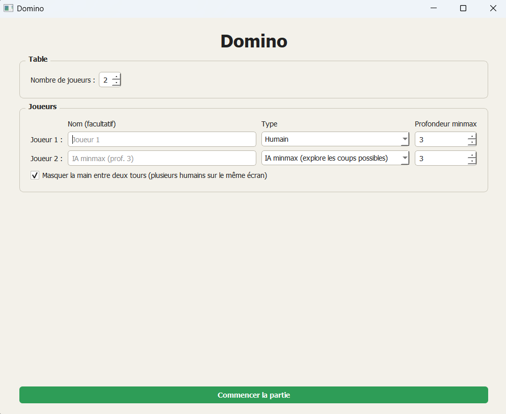
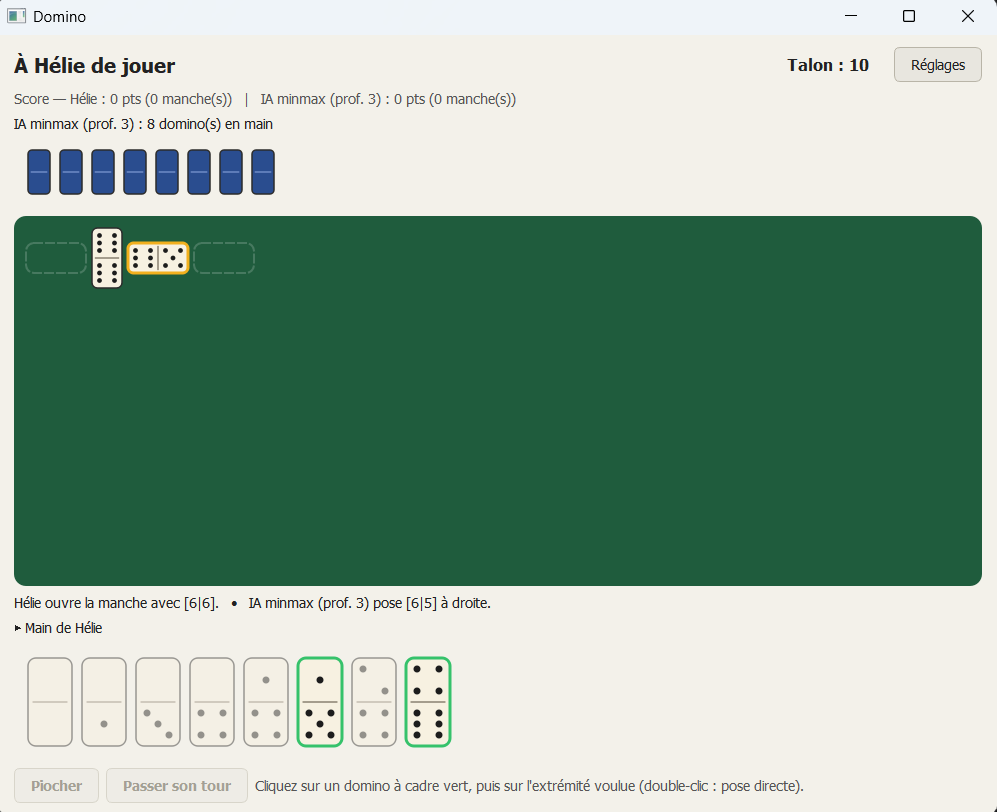

1. Présentation
Le projet est un jeu de dominos double-six (28 pièces) en Python. Il offre la possibilité d'y jouer en console ou sur une interface graphique PyQt, à 2, 3 ou 4 joueurs, contre des IA de trois niveaux différents (aléatoire, gloutonne, minmax) ou avec d'autres humains sur le même écran.
Règles
- Chacun reçoit une main depuis les 28 dominos, le reste forme le talon (9 dominos par joueur
à 2 joueurs, 7 à 3, 5 à 4 dans la version graphique ; 7 chacun dans la variante console
dominos_4_players.py). - Ouvre celui qui a le double le plus fort, sinon le domino de plus grande valeur ; il le pose pour démarrer la chaîne.
- À chaque tour, on pose un domino à gauche ou à droite de la chaîne, chiffre contre chiffre (retournement automatique si besoin).
- Si aucun de nos dominos ne peut être joué, on pioche une seule carte du talon et son tour passe, même si elle est jouable. Si le talon est vide, on passe son tour.
- Le jeu se termine si l'un des joueurs vide son jeu ou si plus personne ne peut jouer et que le talon est vide. Le joueur ayant vidé son jeu ou celui qui obtient le score le plus faible gagne. En cas d'égalité, la partie est nulle.
- Chacun ne connaît que sa main, le plateau et la taille des mains adverses : les IA tranchent sans tricher (voir section 5).
Paramètres du jeu
- Nombre de joueurs : 2 à 4 (minmax limité à 3).
- Type de chaque joueur
- Profondeur minmax : 1 à 8, 3 par défaut.
- Nombre de parties simulées pour les statistiques (section 5).
2. Installation et lancement
Prérequis
- Python 3.12 ou supérieur (imposé par l'énoncé).
- Pour l'interface graphique uniquement : PyQt6 (recommandé) ou PyQt5. Le code essaye PyQt6 puis bascule automatiquement sur PyQt5.
- Aucune autre dépendance : la bibliothèque standard suffit pour la console.
Installation
# récupérer le dépôt
git clone https://github.com/Helio66/The_magic_land_of_dominos.git
cd The_magic_land_of_dominos
# dépendance de l'interface graphique (optionnelle)
pip install PyQt6Lancement des différents modes
| Mode | Commande | Description |
|---|---|---|
| Console (humain vs humain) | python dominos_basics.py |
Deux joueurs humains en console. |
| Console (humain vs humain) | python dominos_main.pypuis 0 |
plusieurs joueurs humains en console. |
| Console (humain vs IA) | python dominos_main.pypuis 1 |
Un humain contre 1 ou plusieurs IA, de niveau choisi, de type aléatoire, gloutonne ou minmax. |
| Console (IA vs IA) | python dominos_main.pypuis 2 |
Regarder plusieurs IA s'affronter (aléatoire, gloutonne, minmax). |
| Console 4 joueurs | python dominos_4_players.py |
Variante console à quatre joueurs (7 dominos chacun, sans talon). |
| Interface graphique | python dominos_ihm.py |
IHM PyQt : réglages des joueurs (2 à 4), affichage complet, score sur plusieurs manches. |
| Statistiques / tournois | python dominos_stat.py |
Simule N parties entre IA et affiche le bilan des victoires (voir section 5). |
| Tests unitaires | python -m unittest test_main.py |
Suites de tests sur le moteur (Domino, Chain, distribution, coups légaux, IA...). |
dominos_main.py et
partie.py soient dans le même dossier que dominos_ihm.py.
Pour que cette documentation soit consultable hors ligne, placez-la dans le dossier
docs/ du dépôt sous le nom index.html.
3. Guide d'utilisation
En console
- Le programme affiche le plateau, votre main et les dominos jouables : on tape l'indice du
domino, puis
leftourightsi les deux côtés marchent. - La pioche et le passe-tour sont automatiques, avec le domino pioché affiché.
- La fin de manche annonce le gagnant et les points.
Avec l'IHM PyQt
Deux écrans : les réglages, puis le jeu.

- On choisit le nombre de joueurs (2 à 4) puis, pour chacun : un nom, un type et, pour minmax, une profondeur (1 à 8).
- À 4 joueurs, l'option minmax est grisée, avec un mot d'explication.
- Le masquage des mains sert quand plusieurs humains partagent l'écran : la main ne s'affiche qu'après un clic du joueur concerné.
- Il faut au moins un humain pour lancer la partie.

- En haut : le tour, le talon et le score. Au milieu, les adversaires en face cachée et la chaîne défilable. En bas, votre main.
- Les dominos jouables sont surlignés : on clique sur un domino puis sur la zone de dépôt de gauche ou de droite ; double-clic si les deux côtés marchent.
- Les boutons « Piocher » et « Passer » ne s'allument que quand la règle l'autorise.
- Le journal raconte la partie coup par coup (pioches invisibles le cas échéant).
- À la fin de la manche, le bandeau propose « Nouvelle manche » (score conservé) ou « Changer les réglages », sans relancer le programme.
- Pendant que l'IA réfléchit, le calcul tourne dans un fil séparé : l'écran reste réactif.
4. Architecture
Trois couches séparées : le moteur de règles, les IA, et les interfaces. Concrètement,
partie.py ne contient aucun code Qt et dominos_main.py contient
moteur et IA sans rien d'affichage graphique. Ni le moteur ni les IA ne savent qui les affiche :
on peut tout tester en console comme en graphique.
Les modules
| Module | À quoi il sert |
|---|---|
dominos_main.py |
Le cœur : Domino, Chain, distribute, les coups légaux,
les trois IA et les modes console (2 à 4 joueurs, avec talon). |
partie.py |
Le moteur d'une manche pour l'IHM : état du tour, actions validées, fin de manche, score
multi-manches. Zéro Qt, il ne fait que réutiliser dominos_main.py. |
dominos_ihm.py |
L'interface graphique PyQt : écran de réglages, écran de jeu, dessin des dominos, coups légaux surlignés, IA lancée dans un thread. |
dominos_stat.py |
Les statistiques : run_stats() simule des tournois entre IA (section 5). |
dominos_4_players.py |
La variante console à 4 joueurs, sans talon. |
dominos_basics.py |
La première version du jeu (2 joueurs, 7 dominos chacun), gardée pour l'historique et les tests. |
test_main.pytest_basics.py |
Les tests unittest du moteur : Domino, Chain, distribution, coups légaux, retrait, choix IA, cas limites de minmax. |
L'ensemble est disponible sur github à ce lien
5. IA
Les trois niveaux
| IA | Idée | Paramètre |
|---|---|---|
| Aléatoire | Joue un coup légal au hasard. C'est la baseline. | aucun |
| Gloutonne | Joue le domino le plus lourd pour se défausser de ses points au plus tôt. | aucun |
| Minmax | Explore l'arbre des coups jusqu'à une profondeur fixée, en alternant maximisation (elle) et minimisation (adversaires), pioches et passes comprises. | profondeur, 1 à 8 |
Et la main cachée ?
L'IA minmax ne connaît pas la main adverse, et elle ne triche pas. Elle raisonne par détermination :
- elle liste les dominos inconnus (ni dans sa main, ni sur la chaîne) :
anonymous_dominos; - elle énumère les répartitions plausibles de ces dominos entre les mains adverses et le talon :
guess_repartition; - elle fait tourner minmax sur chaque hypothèse ;
- elle vote : le coup choisi le plus souvent gagne (
choose_minmax), ce qui neutralise les hypothèses fantaisistes.
L'évaluation
En milieu d'arbre, un nœud vaut la somme des points restant dans la main de l'IA : jouer lourd tôt et raccourcir la partie est donc payant, et fermer le jeu devient un objectif, puisque les positions de jeu fermé sont reconnues dans l'arbre (écart de points en fin de partie, bornes franches ±infini sur une victoire imminente).
partie.py, le coup renvoyé par l'IA est vérifié (indice et
côté légaux), et si minmax échoue on retombe sur le glouton. La partie ne se bloque jamais,
et le calcul tourne hors du thread d'affichage.
Mesurer la force : les tournois
python dominos_stat.py demande la composition de la table et le nombre de parties,
puis simule tout et affiche le bilan :
Minimax (profondeur 3) a gagné 83 / 100 parties.